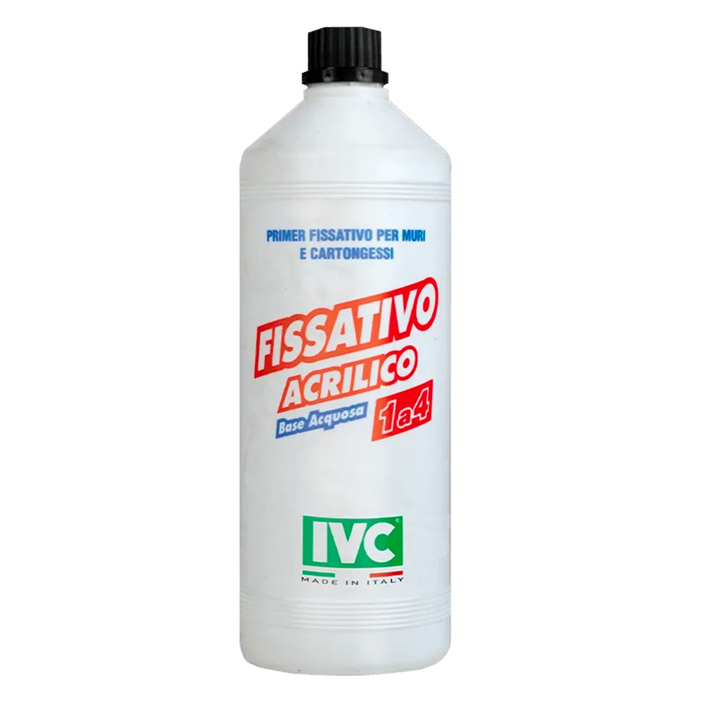

FISSATIVO ACRILICO
Primer professionale a base acqua, diluibile 1:4, per isolare, consolidare e rendere più uniforme il supporto prima della finitura. Disponibile in latta da 5 litri.
Primer, fondi e prodotti uniformanti per preparare il supporto prima della finitura. Ogni scheda mostra la fotografia ufficiale del prodotto senza ritagli e offre il collegamento diretto alla pagina ufficiale IVC o Premier di riferimento.

Primer professionale a base acqua, diluibile 1:4, per isolare, consolidare e rendere più uniforme il supporto prima della finitura. Disponibile in latta da 5 litri.

Finitura in polvere a base di calce idrata e inerti selezionati, per finiture al civile bianche all’interno, bioedilizia e restauro.

Finitura liscia per interni a base di calce idrata, sabbia micronizzata e additivi che ne migliorano la lavorabilità.